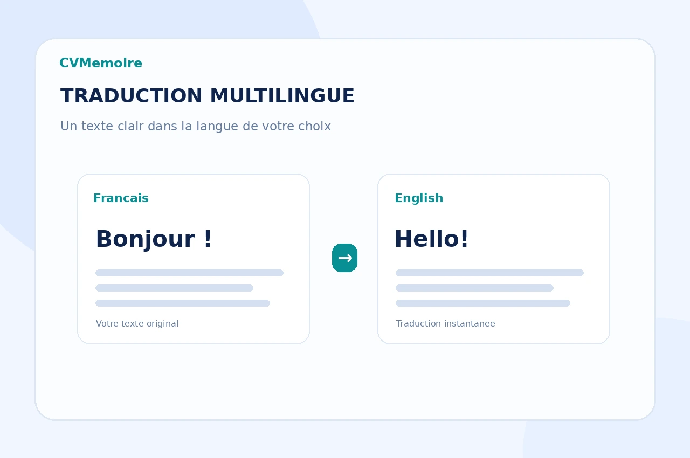

Accueil / Conversion PDF
Service gratuitConvertir un PDF en Word, Excel ou PowerPoint
Un PDF peut être difficile à modifier, à réutiliser ou à présenter. Dites-nous exactement ce que vous voulez récupérer : le texte, les tableaux, certaines pages ou une structure de présentation plus claire.

Précisez le format souhaité et, si besoin, les pages ou les éléments à conserver dans le document final.
Votre demande
Envoyer un PDF à convertir
Ajoutez votre fichier, choisissez le format de sortie directement dans le formulaire et précisez vos consignes si nécessaire.
Questions fréquentes
Bien préparer votre fichier
Le service est-il gratuit ?
Oui. La conversion PDF vers Word, Excel ou PowerPoint proposée sur cette page est gratuite.
Un PDF scanné peut-il être converti ?
Oui, mais il peut nécessiter une reconnaissance de texte. La netteté du scan influence la qualité du résultat.
Dois-je renvoyer le PDF dans WhatsApp ?
Non. Le PDF est envoyé directement avec le formulaire en ligne. Après validation, vous n’avez aucune pièce jointe à renvoyer dans WhatsApp.